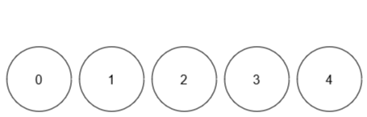

| Category | Difficulty | Likes | Dislikes |
|---|---|---|---|
| Algorithms | Medium | 762 | 94 |
google | bloomberg
You are given an integer limit and a 2D array queries of size n x 2.
There are limit + 1 balls with distinct labels in the range [0, limit]. Initially, all balls are uncolored. For every query in queries that is of the form [x, y], you mark ball x with the color y. After each query, you need to find the number of colors among the balls.
Return an array result of length n, where result[i] denotes the number of colors after ith query.
Note that when answering a query, lack of a color will not be considered as a color.
Example 1:
Input: limit = 4, queries = [[1,4],[2,5],[1,3],[3,4]]
Output: [1,2,2,3]
Explanation:
Example 2:
Input: limit = 4, queries = [[0,1],[1,2],[2,2],[3,4],[4,5]]
Output: [1,2,2,3,4]
Explanation:

Constraints:
1 <= limit <= 1091 <= n == queries.length <= 105queries[i].length == 20 <= queries[i][0] <= limit1 <= queries[i][1] <= 109